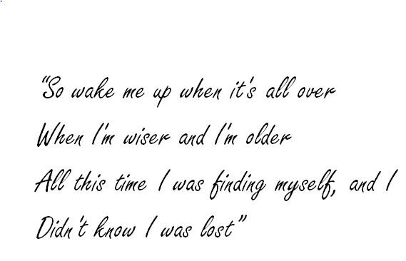

Feeling my way through the darkness
Guided by a beating heart
I can't tell where the journey will end
But I know where to start
They tell me I'm too young to understand
They say I'm caught up in a dream
Well life will pass me by if I don't open up my eyes
Well that's fine by me
So wake me up when it's all over
When I'm wiser and I'm older
All this time I was finding myself, and I
Didn't know I was lost
So wake me up when it's all over
When I'm wiser and I'm older
All this time I was finding myself, and I
Didn't know I was lost
Meaning of "Wake me up" by Avicii
“Wake Me Up” is a song by the late Swedish superstar DJ Avicii. According to the song’s vocalist and one
of its writers American musician Aloe Blacc, the song was inspired by true events in his life.
Speaking with Today, Blacc said a few years before penning the hit song, while on a tour in Europe,
he suddenly came to the realization that the life he was living was too good for him to believe.

Fact about "Wake me up"
“Wake Me Up” was written by Avicii, Aloe Blacc and American guitarist Mike Einziger of Incubus fame.
Einziger played the famous acoustic guitar on the track.
The three musicians wrote the song in about two hours at Einziger’s home. Speaking to The Huffington Post,
Blacc said the original completed version of the song was the acoustic one and that it was Avicii who
remixed the song into the famous dance/electronic song that it is currently known the world over.
The song was produced by Avicii and Iranian-Swedish music producer Arash Pournouri.
It is worth noting that Pournouri once served as the manager for Avicii.
“Wake Me Up” was officially released on June 17th, 2013 as the first single from
Avicii’s critically acclaimed debut studio album titled True.
Did “Wake Me Up” win a Grammy Award?
No. It is noteworthy that although Avicii was nominated for multiple Grammy Awards
during his lifetime, he never won one.
What are some of the awards that “Wake Me Up” has received over the years?
Despite not winning a Grammy, the song has won a number of prestigious awards,
including a Billboard Music Award and a Teen Choice Award in 2014.
What genre does “Wake Me Up” belong to?
Owing to the nature of the song, it can be classified under two major genres: foltronica and EDM.
Who is the girl in the “Wake Me Up” music video?
The music video actually stars two girls. The older one is a model from Russia named Kristina Romanova
whereas the younger one is an American model called Laneya Grace.